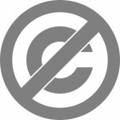
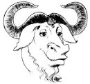

Avoin mediatuotanto
AVOIMET LISENSSIT JA VAPAAT SISÄLLÖT
Video-ohjelmia tekiessäsi törmäät tekijänoikeuskysymyksiin kahdella tasolla. Ensinnäkin sinun tulee huomioida tekijänoikeudet, jos käytät ohjelmassasi jonkun muun tekemää materiaalia kuten musiikkia, kuvia tai tekstiä. Toisaalta tekijänoikeudet koskevat myös omaa ohjelmaasi kun se on valmis.
TEKIJÄNOIKEUS JA AVOIMET LISENSSIT
Suomessa ja useissa muissa maissa kaikki luovan työn tuloksena syntyneet teokset eli esimerkiksi tekstit, musiikki, ohjelmat, elokuvat, valokuvat, tietokoneohjelmat, pelit ja taideteokset on lähtökohtaisesti suojattu tekijänoikeudella. Tekijänoikeus syntyy automaattisesti teosta luotaessa. Lain määrittelemä tekijänoikeus on hyvin kattava, mutta samalla rajoittava: kaikenlainen teoksen levittäminen, kopioiminen, hyödyntäminen, muokkaaminen ja jälleenmyymyinen on kiellettyä ilman tekijän lupaa.
Useissa tapauksissa toisen teoksen käyttöön tarvittavan luvan pyytäminen tekijältä on kuitenkin käytännössä työlästä, ellei mahdotonta. Monet tekijät myös toivovat, että heidän työnsä leviää ja sitä hyödynnetään uusissa yhteyksissä mahdollisimman vapaasti. Tekijänoikeuslainsäädännöstä on eräiden toimijoiden mielestä tullut myös taakka ja este ideoiden ja luovan työn vapaalle leviämiselle.
Perinteisen tekijänoikeuskäytännön rinnalle on luotu joukko avoimia lisenssejä ja käytäntöjä, joilla tekijä voi rajoittaa tekijänoikeuksiaan ja sitä kautta varmistaa mahdollisimman suuren avoimuuden ja vapauden oman työnsä levittämiselle ja hyödyntämiselle. Vapailla lisensseillä viitataan kulttuurisisältöjen yhteydessä esimerkiksi Creative Commonsiin, ohjelmistopuolella vastaava lisenssi on GNU GPL. Tekijä voi lisensoinnin sijaan myös luopua tekijänoikeuksistaan kokonaan, jolloin hän antaa työnsä täysin avoimesti muiden käyttöön, yleiseksi hyödyksi. Tällaiset teokset kuuluvat Public Domainiin, kuten myös teokset, joiden lisenssi on vanhentunut.
Jos haluat käyttää jonkun toisen tekemää materiaalia ohjelmassasi, ota ensiksi selvää, minkälaiset tekijänoikeudet teosta koskevat. Avoin sisältö on yleensä julkaistu Creative Commons -lisenssillä tai se kuuluu Public Domainiin. Tällaista sisältöä voit kierrättää omassa videojulkaisussasi laillisesti ja ilman korvausta, kunhan noudatat lisenssien mainitsemia ehtoja.
Jos haluat julkaista oman ohjelmasi avoimella lisenssillä, Creative Commons-lisenssi on hyvä vaihtoehto. Muista, että sinun tulee tehdä lisensointi erikseen, sillä kuten edellä jo sanottiin, täysi tekijänoikeus syntyy kaikille teoksille automaattisesti.
Huomaa, että Teostoon kuuluvien säveltäjien musiikista täytyy aina maksaa, vaikka saisit henkilökohtaisesti luvan säveltäjältä.
MITÄ ON VAPAA SISÄLTÖ?
Avointen lisenssien ja Public Domainin yhteydessä puhutaan vapaasta sisällöstä. Vapaan kulttuurin teosten määrittely (http://freedomdefined.org/Definition/Fi) tunnistaa seuraavat perusvapaudet, jotka minkä tahansa lisenssin täytyy tarjota, jotta työtä voidaan pitää "vapaana sisältönä":
-
Vapautta käyttää teosta ja nauttia sen käyttämisen hyödyistä.
-
Vapautta tutkia teosta ja soveltaa siitä hankittua tietoa.
-
Vapautta tehdä ja levittää kopioita, osaksi tai kokonaisuudessaan, sen sisällöstä ja ilmaisusta.
-
Vapautta tehdä muutoksia ja parannuksia ja levittää johdettuja teoksia.
Vain kolmea rajoitusta pidetään sallittuina:
-
Tekijät pitää mainita (alkuperäisteoksen tekijät on mainittava).
-
Lisenssin vapaudet pitää siirtää teoksen mukana (johdannaisteos pitää julkaista vastaavalla lisenssillä).
-
Vapaudet voidaan suojata (esimerkiksi pääsyä lähdekoodiin vaaditaan, kun teoksen johdannaisteoksia jaellaan uudelleen).
Vapaallakin sisällöllä on kuitenkin aina tekijä. Tekijyys säilyy teoksen tekijällä, vaikka sisältö on määritelty vapaasti käytettäväksi. Tekijän ja teoksen nimen mainitseminen, jos tiedossa, ja materiaalin käyttäminen reilussa hengessä sisältyy vapauden ja avoimuuden ideaan. Alla kerrotaan tarkemmin edellä esitellyistä lisensseistä.
Public domain

Public domain on englanninkielinen termi, jolla tarkoitetaan vapaasti yleiseen käyttöön asetettujen teosten joukkoa. Usein public domainista käytetään lyhennettä PD. Public domainissa olevan teoksen tekijä on luopunut tekijänoikeuksistaan siinä määrin kuin se on lainsäädännön mukaan mahdollista, ja teoksen käytölle on mahdollisimman vähän rajoituksia.
Useimmissa maissa tekijänoikeuslaki sallii teoksen tai sen osan levittämisen esimerkiksi tietyn ajan kuluttua tekijän kuolemasta. Kaikki teokset siirtyvät public domainiin näin myös vanhetessaan.
Creative Commons
Creative Commons on Yhdysvalloissa vuonna 2001 perustettu voittoa tavoittelematon yhteisö, joka pyrkii edistämään luovan työn tuotteiden levittämistä laillisesti. Creative Commons eli CC on yksi tunnetuimmista ja laajimmin käytetyistä lisenssointijärjestelmistä, jossa tekijä voi itse määritellä tekijänoikeuksiensa laajuuden valitsemalla erilaisista lisenssivaihtoehdoista. Samalla Creative Commons kokoaa verkkoon helposti etsittävään muotoon tällaisia vapaasti levitettäviä teoksia.
Creative Commons -lisenssit on suomennettu vuonna 2004. Suomessa Creative Commons -sivuista ja lisensseistä vastaavat Taideteollinen korkeakoulu sekä Tietotekniikan tutkimuslaitos HIIT.
Creative Commonsista löydät lisätietoa suomenkielisiltä sivuilta osoitteessa: http://creativecommons.fi/
Creative Commons -lisenssiehdot
Creative Commonsilla on neljä vapaasti valittavaa lisenssiehtoa:
Nimi mainittava (englanniksi Attribution, lyhenne by)
Annat muiden kopioida, jaella, näyttää ja esittää sinun tekijänoikeuksiisi kuuluvaa teosta sekä sen pohjalta tehtyjä muokattuja versioita teoksestasi vain, jos he mainitsevat nimesi alkuperäisenä tekijänä.
Sama lisenssi (englanniksi ShareAlike, lyhenne sa)

Annat muiden levittää muokattuja teoksia vain samalla lisenssillä, jolla oma teoksesi on julkaistu.
Ei kaupalliseen käyttöön (englanniksi NonCommercial, lyhenne nc)

Annat muiden kopioida, jaella, näyttää ja esittää sinun tekijänoikeuksiisi kuuluvaa teosta sekä sen pohjalta tehtyjä muokattuja versioita vain ei-kaupallisessa käytössä.
Ei jälkiperäisiä (englanniksi NoDerivatives, lyhenne nd)

Annat muiden kopioida, jaella, näyttää ja esittää sinun tekijänoikeuksiisi kuuluvaa alkuperäistä teosta, mutta et salli muokattujen versioiden tekemistä teoksesta.
Erilaiset Creative Commons -lisenssit muodostuvat näiden neljän ehdon yhdistelmistä. Suomenkielisiä Creative Commons -lisenssejä on 11.
Esimerkiksi merkintä nc-sa tarkoittaa, että teosta ei saa käyttää kaupallisiin tarkoituksiin ja kaikki teoksesta muokatut versiot tai teosta hyödyntävät uudet teokset pitää julkaista samalla nc-sa -lisensillä.
Pelkkä by merkintä taas tarkoittaa, että teosta saa käyttää ja hyödyntää miten tahansa kunhan mainitsee alkuperäisen tekijän nimen. Lähes kaikki lisenssin käyttäjät valitsevat ainakin vaihtoehdon by.
GNU General Public Licence

GNU General Public License eli lyhennettynä GNU GPL tai pelkkä GPL on vapaiden ohjelmistojen julkaisemiseen tarkoitettu lisenssi, joka antaa kenelle tahansa oikeuden tutkia, käyttää, kopioida, muuttaa ja jakaa edelleen ohjelmia ja niiden lähdekoodia. Lisenssi takaa, että nämä vapaudet säilyvät myös GPL-koodiin pohjautuvissa muunnelluissa ohjelmissa. Mikäli GPL-ohjelmaa tai sen muunnelmaa levitetään edelleen, lähdekoodi on julkaistava samalla lisenssillä, eikä ohjelman käytölle tai levitykselle saa asettaa lisärajoituksia.
GPL-lisenssi ei estä ohjelmien kaupallista käyttöä. Ohjelman muokkaaja saa myydä tuotteen kopioita tai muunnelmia, kunhan noudattaa lisenssin asettamia ehtoja. GPL-ohjelmiin perustuvia muunnoksia voidaan myös ohjelmoida kaupallisesti, ja jos muunneltua ohjelmaa ei levitetä eteenpäin, lähdekoodiakaan ei ole pakko julkaista. On olemassa monia yrityksiä, joiden liiketoimintamalli perustuu siihen, että ne muokkaavat ja yhdistelevät GPL-ohjelmia muiden yritysten tarpeisiin.
GPL on selvästi käytetyin vapaiden ohjelmistojen lisenssi, ja muun muassa lukemattomat erilaiset GNU/Linux-käyttöjärjestelmän versiot koostuvat pääosin GPL-ohjelmista. Vaikka GPL-lisenssiä käytetään pääasiassa ohjelmien lisensointiin, on esimerkiksi FLOSS Manualsin käyttöoppaat julkaistu GPL-lisenssin alaisuudessa. Videoiden tapainen materiaali kannattaa kuitenkin julkaista Creative Commons -lisenssillä.
GNU GPL -lisenssistä löydät lisätietoa osoitteesta: http://www.gnu.org/licenses/gpl.html
ESIMERKKEJÄ VAPAASTA SISÄLLÖSTÄ
Avoimilla lisensseillä on julkaistu verkossa avoimen lähdekoodin ohjelmistojen lisäksi vapaasti erilaisiin tuotantoihin tai uudelleenmiksaukseen käytettävissä olevaa sisältöä.
Creative Commons ylläpitää listaa CC-lisensoidusta aineistosta osoitteessa http://wiki.creativecommons.org/Content_Curators. Alla esitellään muutamia avoimen sisällön lähteitä, joista voi olla apua tuotannossasi.
ccMixter
ccMixter (http://www.ccmixter.org) on Creative Commonsin luoma yhteisöllinen musiikkikirjasto, jossa kaikki kappaleet on lisensoitu avoimella cc-lisenssillä. ccMixteristä voit etsiä musiikkia ohjelmaasi erilaisilla hakutoiminnoilla, ladata ne koneellesi ja tuoda leikkausohjelmaan. Voit myös uudelleenmiksata kappaleita ja jakaa omia biisejäsi muiden käytettäväksi lataamalla ja lisensoimalla ne ccMixteriin. Musiikin lataaminen omalle koneelle ei vaadi rekisteröitymistä, mutta oman musiikin lisääminen sivuille kyllä.
Freesound
Freesound (www.freesound.org) on ääniin erikoistunut avoin tietokanta. Voit hakea esimerkiksi liikenteen ääntä tai tuulen huminaa ja ladata tiedostot koneellesi. Ladataksesi ääniä sinun tulee rekisteröityä käyttäjäksi.
Internet Archive

Internet Archiven löydät osoitteesta http://www.archive.org/
Internet Archiven tavoitteena on internetin ja digitaalisen tiedon tallentaminen, arkistointi ja säilyttäminen. Internet Archive lataa ajoittain miltei kaikki mahdolliset verkkosivut, sekä indeksoi ja arkistoi ne. Tätä palvelua kutsutaan nimellä WayBack Machine (http://www.archive.org/web/web.php) ja sen arkistoa on helppo käyttää. Voit nähdä oman sivustosi vanhemmat versiot tai lukea verkosta poistuneiden sivujen sisältöä.
Tämän lisäksi Internet Archive tarjoaa varastointitilaa miltei mille tahansa tiedolle, jonka tahdot ladata arkistoon. Voit tallentaa ohjelmistoja, videota, tekstiä, ääntä, mitä tahansa. On olemassa tiettyjä vaatimuksia, joista olennaisin on se, että sinun tulisi omistaa teokset, tai ainakin saada lupa niiden lataamiseen. Sinun täytyy myös lisensoida työt Creative Commons -lisenssillä (tai vastaavalla). Tämä ei yleensä ole ongelma, mikäli kyseessä on itse tekemäsi teos, mutta se voi olla ongelmallista, mikäli käytit tekijänoikeusten alaista materiaalia (esimerkiksi musiikkia videossa) työsi sisällä, tai jos lataat jotain jonkun muun tekemää. Internet Archive sisältää myös valtavan määrän public domainiin kuuluvaa materiaalia, esimerkiksi vanhoja dokumenttifilmejä, joita voi käyttää oman teoksen kuvamateriaalina.
Wikimedia Commons
Wikimedia Commonsin löydät osoitteesta http://fi.wikipedia.org/wiki/Wikimedia_Commons
Wikimedia Commonsia ylläpitää Wikimedia Foundation, voittoa tuottamaton säätiö, joka ylläpitää myös Wikipediaa. Se on mediatiedostojen tietokanta, jota kuka tahansa voi käyttää mihin tahansa tarkoitukseen. Avoimelle verkkosivulle voi lisätä tiedostojaan vapaasti.
Sivustoa ylläpitävät vapaaehtoiset toimittajat, jotka luovat myös suurimman osan sisällöstä lisäämällä omia töitään. Yhteisö on monikielinen, kääntäjiä on saatavilla kymmenille eri kielille. Se kerää vain materiaalia, joka on vapaiden sisältölisenssien alaista tai public domainissa. Se perustettiin syyskuussa 2004, vuoden 2010 alussa sivuilla on lähes 6 miljoonaa tiedostoa.
Wikipedia on käynnistänyt myös Let's get video on Wikipedia-projektin (http://videoonwikipedia.org), jolla ensyklopediaan haetaan artikkeleja havainnollistavaa videosisältöä.